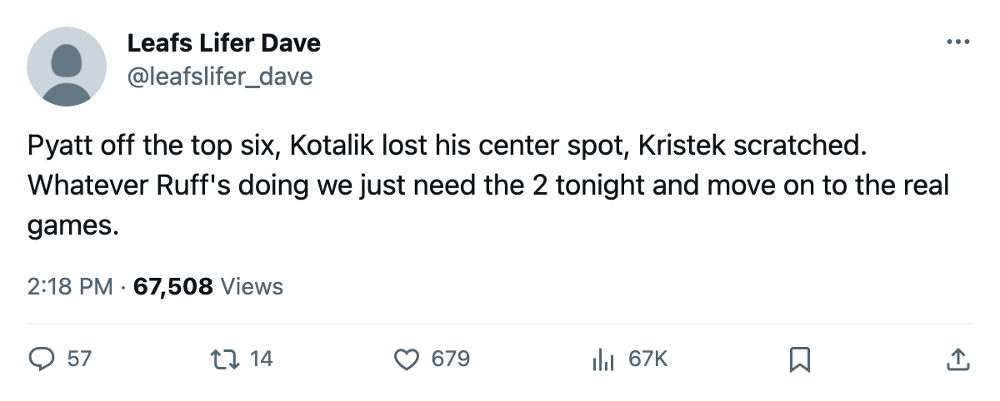

Tonight: Buffalo visits with a scrambled top 6, and 4 straight 4-goal wins on the line
Pyatt demoted, Drury at center, Kotalik stripped of his slot. Toronto wants the season series 2-0 tonight.
 Sam OkaforLeafs beat reporter · Queen City Telegram
Sam OkaforLeafs beat reporter · Queen City Telegram
 Buffalo Sabres visits
Buffalo Sabres visits  Toronto Maple Leafs tonight with 18 points in 21 games, a 5-5 home record, and a forward group that has been rearranged four times across the top two lines since the last visit to Toronto on 2005-11-15.
Toronto Maple Leafs tonight with 18 points in 21 games, a 5-5 home record, and a forward group that has been rearranged four times across the top two lines since the last visit to Toronto on 2005-11-15.
The changes on Buffalo's side:  Taylor Pyatt78 dropped from first-line center to third-line work.
Taylor Pyatt78 dropped from first-line center to third-line work.  Chris Drury87 shifted from a wing-based role to a checking-center assignment.
Chris Drury87 shifted from a wing-based role to a checking-center assignment.  Ales Kotalik80 lost his center slot entirely. Jaroslav Kristek74 was scratched on 2005-11-27. Buffalo won 2-1 over Tampa Bay that night to stop a slide, but 5-11-2 with 63 goals against in 21 games, the division's worst total, and the problem is structural.
Ales Kotalik80 lost his center slot entirely. Jaroslav Kristek74 was scratched on 2005-11-27. Buffalo won 2-1 over Tampa Bay that night to stop a slide, but 5-11-2 with 63 goals against in 21 games, the division's worst total, and the problem is structural.
Toronto comes in on a 4-game winning streak with exactly 4 goals in each. A 4-3 home win over  Philadelphia Flyers on 2005-11-23, then 4-3 in overtime at
Philadelphia Flyers on 2005-11-23, then 4-3 in overtime at  Ottawa Senators on 2005-11-25, then 4-2 over
Ottawa Senators on 2005-11-25, then 4-2 over  Washington Capitals on 2005-11-26, then 4-2 at Philadelphia on 2005-11-29. The season series is 1-0-0 to Toronto, a 5-3 road win in Buffalo.
Washington Capitals on 2005-11-26, then 4-2 at Philadelphia on 2005-11-29. The season series is 1-0-0 to Toronto, a 5-3 road win in Buffalo.
The matchups that matter
Petr Chlup87 has 17 points in 23 games on 20.6 minutes.  Rostislav Klesla87 has 8 points in 23 on 26.1 minutes and carries +8 on the Bureau's Development Index. Both are driving from the back end against a defense that has surrendered 63 in 21.
Rostislav Klesla87 has 8 points in 23 on 26.1 minutes and carries +8 on the Bureau's Development Index. Both are driving from the back end against a defense that has surrendered 63 in 21.
 Rick Nash85 has 15 points in 23 games on 14.5 minutes with +7 on the Index.
Rick Nash85 has 15 points in 23 games on 14.5 minutes with +7 on the Index.  Stanislav Chistov87 has 14 in 23 on 19.8 minutes with +8.
Stanislav Chistov87 has 14 in 23 on 19.8 minutes with +8.  Maxim Afinogenov86 leads the club's forwards with 9 goals and 15 points in 23 games.
Maxim Afinogenov86 leads the club's forwards with 9 goals and 15 points in 23 games.  Mats Sundin92 has 6 goals and 18 points in 23 on 23.5 minutes.
Mats Sundin92 has 6 goals and 18 points in 23 on 23.5 minutes.
 Jason Spezza73 has 4 points in 17 games on 4.4 minutes a night. At 22, with a 99 potential, he's buried in the fourth line and the minutes don't match the ceiling.
Jason Spezza73 has 4 points in 17 games on 4.4 minutes a night. At 22, with a 99 potential, he's buried in the fourth line and the minutes don't match the ceiling.
Back tomorrow
Tim Gardener75 returns 2005-12-01. Zero points in 14 games on 2.9 minutes this season, but a fourth-liner off the shelf before  Marian Gaborik99 arrives on 2005-12-25 gives the bottom six a body to rotate.
Marian Gaborik99 arrives on 2005-12-25 gives the bottom six a body to rotate.
After tonight,  Tampa Bay Lightning visits on 2005-12-03. Toronto then plays 3 in 6 days: 2005-12-06 at
Tampa Bay Lightning visits on 2005-12-03. Toronto then plays 3 in 6 days: 2005-12-06 at  New York Islanders, 2005-12-07 at home against
New York Islanders, 2005-12-07 at home against  New Jersey Devils, a 12-4-1 club with 29 points in 19 games.
New Jersey Devils, a 12-4-1 club with 29 points in 19 games.
